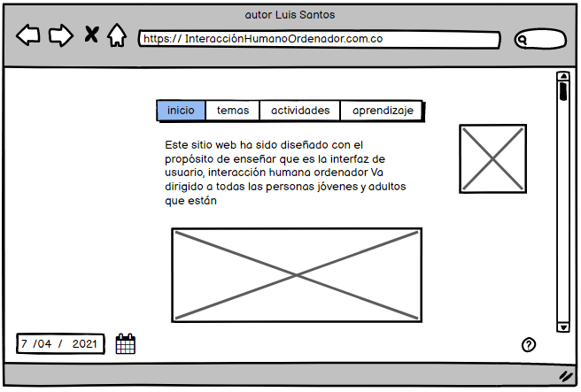

Interacción Humano Ordenador
interfaz de usuario, interacción humana ordenador, la cual es la disciplina que estudia cómo
las personas interactúan con las computadoras y hasta qué punto las computadoras se desarrollan
para interactuar con las personas se llama Interacción Humano-Computadora. HCI consta de tres
componentes: los usuarios, los ordenadores y la interacción entre ellos.
El humano
El humano tiene limitaciones naturales para el procesamiento de información
que impactan en el diseño de sistemas interactivos (por ejemplo, un cirujano
no puede controlar una cámara mientras realiza una operación). Estas limitaciones
o características se consideran y a menudo se estudian para el diseño de productos
en IHC. Además, hay factores inherentes a la condición humana, como el cansancio,
el aburrimiento y el enojo, que también se deben tomar en cuenta. Esto es particularmente
relevante cuando las computadoras se usan en condiciones extremas o críticas
(por ejemplo, por un piloto de avión).
La computadora
La evolución de la computadora ha ido de la mano de la competencia entre compañías productoras
de hardware. Sin embargo, cuando surge la computación personal en los años ochenta, el software
se convierte en un diferenciador para las compañías que contaban con interfaces gráficas de usuario,
como Apple, Microsoft y Xerox; por estas mismas razones la IHC adquiere una mayor relevancia.
Los dispositivos clásicos de entrada, como el teclado y el ratón, y de salida, como el monitor
o proyector, el audio y la impresora, fueron objeto de intenso estudio en los ochenta, pero desde entonces
ha habido innovaciones notables, como el reconocimiento del habla, las pantallas táctiles, las plumas digitales
y, recientemente, el auge de los sensores o bio-señales en el caso de los dispositivos de entrada, y las pantallas
públicas y el papel digital en los de salida. De igual forma, también ha habido un desarrollo importante, aunqueen menor grado,
en otro tipo de dispositivos de entrada/salida, como lo controles físicos, la realidad virtual y aumentada, así como la retroalimentación
háptica, olfativa y algunos actuadores. En resumen, la computadora ha impactado significativamente la vida profesional y cotidiana tanto que algunas
actividades comunes serían impensables hoy en día sin este artefacto tecnológico.
La interacción
La interacción se entiende como un diálogo entre la computadora y el humano. Debido a la gran diversidad de personas y de contextos
en los que se usan las computadoras, continuamente se proponen métodos y técnicas para entender mejor cómo es o cómo debería ser este proceso.
El diseño de computadoras es un proceso inherente al IHC en el que intervienen diversos factores como: i) las personas para las que se diseña
(por ejemplo, sus habilidades, capacidades y limitaciones); ii) la actividad que se desempeñará con la computadora (por ejemplo, una cirugía a corazón abierto); y iii)
el contexto en el cual se realizará la actividad (por ejemplo, un quirófano, sentado en la sala o en una oficina o un vehículo de carreras). Generalmente, la interacción
se da en un lugar donde los aspectos sociales y el contexto organizacional tienen un efecto importante tanto en la persona (humano) como en el sistema (computadora).
De igual manera, una vez que se ha diseñado un sistema interactivo, se tiene que verificar que efectivamente el producto cumple con su propósito.

Grudin, J. (1990). The computer reaches out: the historical continuity of interface
design. En Proc. of the SIGCHI Conference on Human factors in Computing Systems (CHI’90), ACM
Press, pp. 261–268.
